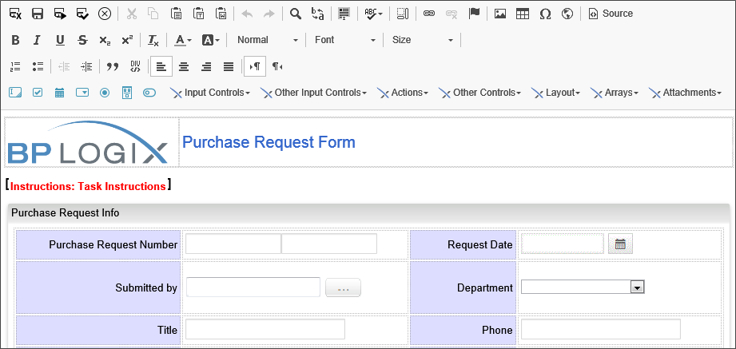
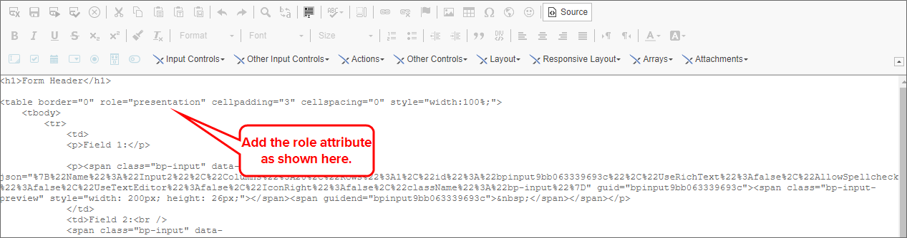

Form definitions are stored in the Process Director database. These Form definitions can be created using the BP Logix Form Builder , with your existing HTML authoring tool, or, for users of Process Director v4.5 or higher, the Online Form Designer in Process Director. Regardless of the method used to create the Form, end-users are presented with an HTML rendition of the electronic form. This enables your users to fill out and submit forms from within their browser.
To read the documentation for the Microsoft Word Form Builder, click here.
The Online Form Designer is used to create the template for your Form, and defines where the controls appear on the page. The Form Control Properties of the Form definition on the server control the default values, validation and pre-population of fields that you place on the Template with the Designer.
The Online Form Designer will check out the Form template and display it automatically whenever you click the Edit tab of the Form definition.

The User Interface for the Online Form Designer consists of a series of toolbars that enable you to add and format content and controls to the Form template. Though you can, if you understand HTML code, perform some more advanced formatting or other functions, knowledge of HTML is not required to create a form using the Online Form Designer. No external tools or other software applications are required to create Form templates when you use the Online Form Builder. All of the functionality you need to create a template is provided in the toolbars that are arrayed at the top of the screen.
The online Form Designer uses the CKEditor, a third-party component, as the basis of the Form Designer. This component provides a number of built-in tools, in addition to the Process Director controls which are detailed in this documentation. Please refer to the CKEditor documentation for the use of these built-in tools. The following built-in tools are available for your use.
The remaining toolbars present you with the BP Logix controls you will use to place controls on the Form, and, as mentioned, these toolbars will be discussed in detail in the Form controls documentation.
There are two control toolbars, one of which enables you to insert the basic controls onto the page, and the second of which consists of a series of dropdown menus from which you can select lesser used controls.
To add a control to the page place the cursor on the page where you want the control to appear, then click on the control you wish to insert. The control will be placed in the desired location, and a Properties dialog box will appear that enables you to set the control properties.
When a form field is added, it must contain a value in the Name field. Default names are used when fields are added (e.g. Input1, Input2); however it is recommended these be changed to a field name that is meaningful in the context of the form. If a Name is empty, the field will not appear on the Form.
The Name property's value must meet the following conditions:
Once you have configured the control, click the OK button to save the configuration and close the Properties dialog box.
You can re-open the Properties dialog box for any control by simply double-clicking the control whose properties you'd like to configure.
To view detailed information about configuring the available controls, please see the Form Controls topic.
 For Process Director v5.25 and lower, the default text field on some controls was set to 'Text'. It now defaults to empty, to enable the use of null text with icons/images. This includes the Array Move Up/Down buttons, the Button control, the Cancel Process and Audit buttons.
For Process Director v5.25 and lower, the default text field on some controls was set to 'Text'. It now defaults to empty, to enable the use of null text with icons/images. This includes the Array Move Up/Down buttons, the Button control, the Cancel Process and Audit buttons.In addition to the Form controls that you can place on a template, you can also insert other objects, such as images or tables onto the Form template. Many of these objects have their own properties that can be configured. These properties can usually be accessed by right-clicking on the object, then selecting the properties you'd like to set from a pop-up menu that appears.
For instance, if you insert a table onto the template, right-clicking anywhere in the table presents you with a pop-up menu from which many different table or cell properties can be configured.

Selecting Table Properties or Cell Properties, for example, will open a Properties dialog box from which you can set properties such as borders, alignment, background colors, and others. You can also add or delete rows and columns, merge and split cells, etc.
Right-clicking on any object that has configurable properties will present you with the appropriate menus to configure the object.
Many Form controls have an Icons tab as part of the control's configuration. Icon usage can be ubiquitous in a Process Director Form, and can make your Forms look more attractive.

The following properties are configurable from a control's Icons tab.
The foreground color of the icon. You can choose the color from the Color Picker, or type in a HTML Hexadecimal color manually, e.g., "#FFFFFF".
The background color of the icon. You can choose the color from the Color Picker, or type in a HTML Hexadecimal color manually, e.g., "#FFFFFF".
Every icon in Process Director has an ID number that can be accessed from the icon chooser. If you know that ID number, you can enter it here. If you do not know the ID number, you will can find it using the Icon Chooser. Picking the icon from the Icon Chooser will automatically enter the Icon Number in the text box.
The tooltip to display when a user mouses over the icon.
The size, in pixels, to use for the icon. This is an optional property, as the icon will show in a standard size if this property is left blank.
The default display for the icon is to show the icon on the left side of the control. Checking this box will display the icon on the right side of the control.
By way of example, a sample Icons tab configuration is shown below.

Using this configuration, the field will look like the example below when the Form runs.

In addition to the using the Icons tab to apply icons to a Form control, you can insert standalone icons onto the Form page by using the Icon Control or Icon System Variable.

While there are several ways to organize controls on a page, many users, especially those not familiar with HTML/CSS, will choose to use a table to provide the layout of the form page. In most cases, this is not an issue. Process Director will automatically refactor tables to display responsively as the width of the user's viewport changes. On screens with narrow widths, tables will be refactored to display in a single column. This responsiveness change happens automatically, and requires no special configuration.
This use of tables may, however, create an accessibility issue. For tables inserted manually into a Form, the container table markup & structure may be parsed by the browser before the Form field content, and some rows may be announced as 'table row blank' to the user, because the Form container has not yet been parsed. This issue can result in screen readers being unable to convey the table contents correctly to users of screen reader software/devices for the disabled.
To fix this, you must set the table as a "presentation" table to change its role from being parsed as a data table to merely serving as a layout container. To do this, click the Source button on the top toolbar to open the Form's HTML source. Find the TABLE tag in the HTML source, and add the attribute, role="presentation", to the HTML tag.

Once you've done so, click the Source button again to return to the visual designer, then save the Form. This should resolve the accessibility issues that might arise from the table.
As the form designer, you must test tables for accessibility, and add the "presentation" role to tables where appropriate.
Process Director, in some cases, also inserts tables automatically, to control the layout of some controls. Process Director automatically adds the appropriate "role" attribute for tables it inserts into forms.